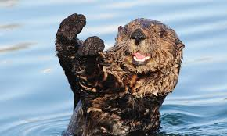
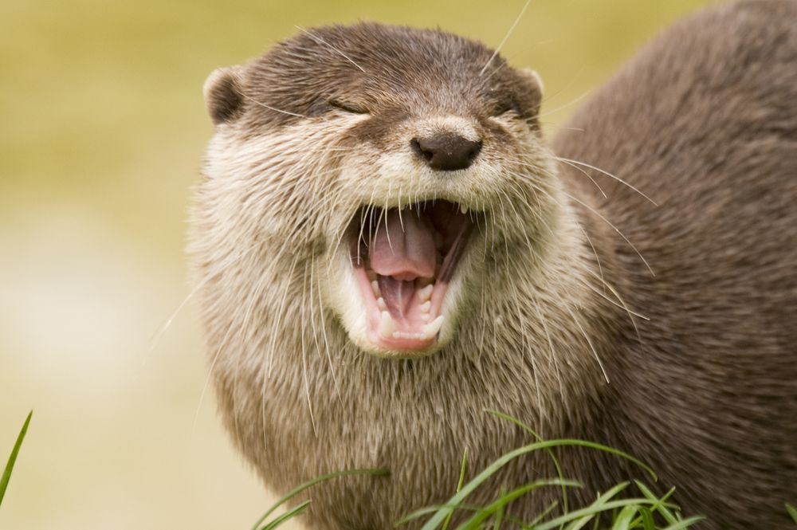

Fun Facts
- Otters have built-in pockets! Now how is this possible? Well, otters actually have loose skin under their forearms, this allows them to store food they come across as well as storing their favorite tools, rocks!
- They make a LOT of noise and are very playful, as we can see in the video below!
- They are very helpful to our planets ecosystem, so let's keep them safe!


